Author: Jose Angel Pech Xool · Course: Trends in Data Science · Date: September 2026
Repository: github.com/joseeangel0/document-intelligence-async-pipeline
Deliverable: source code (runs with docker compose up --build) and this report.
The benchmark, chaos test results and every number in this report can be reproduced with the scripts in the repository.
Problem. Turning documents into machine-readable text is slow and unpredictable. A text file takes milliseconds, while a 30-page scan needs about a minute of OCR. Files also arrive in bursts, and many are malformed. A synchronous endpoint would hold the connection open, time out and lose work when a process dies.
Product. DocIntel is a self-hosted service with an HTTP API, a web UI and a monitoring dashboard. Clients push a document and get a job id back right away. They can then poll the job (or register a webhook) to follow its progress, and download the extracted content as plain text, LLM-ready Markdown and retrieval chunks, together with per-page details and metadata.
Most enterprise knowledge sits in files: scanned invoices, contracts in PDF, Word reports, spreadsheets, slide decks and e-mails with attachments. An LLM can only reason over that knowledge after it has been turned into text, and how it is turned into text sets the ceiling for every RAG system, agent or copilot built on top:
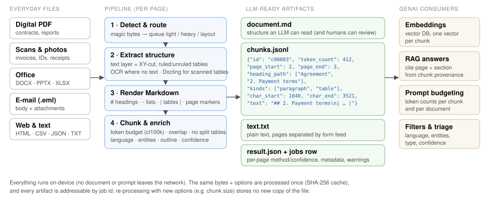
document.md, chunks.jsonl,
text.txt and a structured result.json.POST /v1/documents → 202 + job idValue-adding payload parameters. These were chosen because each one changes cost or behaviour in a way only the client knows about:
| Parameter | Default | Why it exists |
|---|---|---|
language | eng+spa | OCR accuracy depends on the language model. The default suits a bilingual (Mexican) user base. The value is validated against the installed traineddata, so a typo returns 422 instead of a failed job later. |
ocr_mode | auto | auto runs OCR only on pages without a usable text layer. force re-OCRs PDFs whose text layer is garbage (a common scanner artefact). off saves minutes when only the embedded text matters. |
ocr_engine | rapidocr | rapidocr is the most accurate on noisy scans and photos. tesseract is about 3× faster and uses about 4× less memory, and suits clean bulk scans (benchmark in §5). |
pipeline | standard | layout sends PDFs and images to an optional Docling worker that rebuilds tables in scans and photos (table F1 1.00 vs 0.00), at ~8 s/page. It is a different cost/quality point that only the client can choose (§5.3). |
chunk_size_tokens, chunk_overlap_tokens | 512, 64 | The right chunk size depends on the client's embedding model and context window. Both are validated (64–4096; overlap < size) and part of the cache key. |
force | false | Uploads are content-addressed (SHA-256), so identical bytes with identical options return the stored result instantly (HTTP 200, cached_from_job_id). force=true bypasses this. |
extract_entities | true | Emails, URLs, dates, amounts and phone numbers are cheap regex metadata that help triage invoices or forms. |
client_reference | – | Correlates jobs with the caller's own records (filterable). |
callback_url | – | Push instead of poll: a webhook fires on terminal state, retried with exponential backoff. |
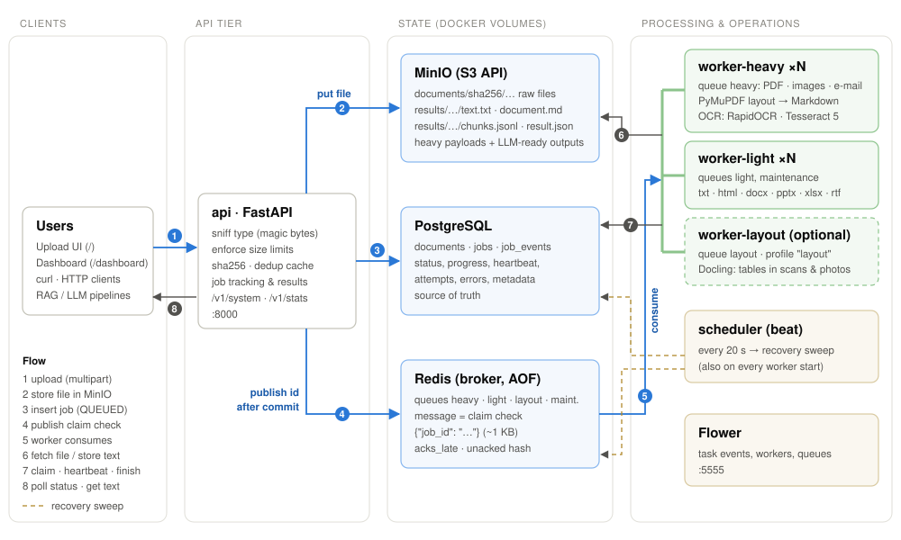
| Service | Technology | Responsibility | Why this choice |
|---|---|---|---|
| api | FastAPI + Uvicorn | validation, claim-check in/out, tracking, UI, stats | OpenAPI docs for free, typed validation, streaming responses |
| worker-heavy | Celery (prefork) | PDFs, images, e-mails and Office files with pictures (may need OCR) | isolated so OCR can never starve cheap jobs; memory-capped |
| worker-light | Celery (prefork) | txt/html/office without pictures + maintenance tasks | sub-second jobs keep low latency during OCR bursts |
| worker-layout optional | Celery + Docling | PDFs/images with pipeline=layout | 3 GB models kept out of the default image; started with --profile layout |
| scheduler | Celery beat | recovery sweep every 20 s | periodic safety net that does not depend on any single worker |
| redis | Redis 7, AOF | message broker only | recommended stack; AOF keeps queued messages across restarts |
| postgres | PostgreSQL 16 | documents, jobs, job_events | transactions, row locks (SKIP LOCKED), JSONB metadata, aggregates for the dashboard |
| minio | MinIO (S3 API) | raw documents and extraction results | claim-check store; same code works on AWS S3/GCS/R2 |
| flower | Flower 2 | live Celery task and worker view | optional Part 6 requirement |
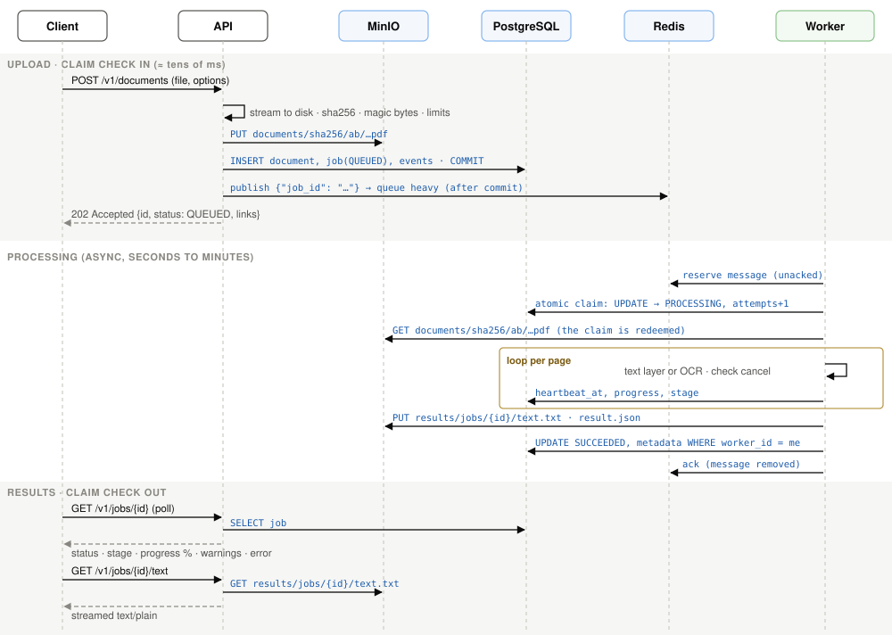
Content-Length or by counting streamed bytes..txt is processed as an image, with a warning. Executables,
archives and binary junk get 415 with the list of accepted extensions.documents/sha256/ab/<sha256>.ext. Content addressing makes re-uploads free
(HEAD first) and gives deduplication and caching at no extra cost.documents and jobs rows plus a received event are written in one transaction.{"job_id": …} is published. The queue depends on the kind and the options:
heavy for PDFs, images and e-mails; light for text, HTML and Office files; Office files that embed more than 50 KB of pictures go to
heavy because their images will be OCR'd; pipeline=layout goes to layout. The response is 202 Accepted with a Location header and links.Messages stay around 1 KB whatever the document size. That keeps Redis memory flat and makes redelivery cheap. It also means the payload is stored once, in a system built for large objects.
| Limit | Value | Reasoning |
|---|---|---|
| Request size | 50 MB | Covers roughly 300 pages of 150 dpi scans or any realistic office file, while bounding API disk and bandwidth. Checked before buffering, so it cannot fill the disk. |
| PDF pages | 500 | At ≈0.3–2 s of OCR per page, 500 scanned pages already approach the 15-minute time limit. |
| Image pixels | 80 MP | Guards against decompression bombs, since a 76 KB PNG can declare 400 MP (tested). PDF pages are rendered with a DPI capped to the same budget. |
| Office uncompressed size | 300 MB | DOCX/PPTX/XLSX are ZIP files, so this is a zip-bomb guard. XLSX is also capped at 2 M cells. |
| Processing time | 900 s soft / 960 s hard | The soft limit fails the job with TIMEOUT and an actionable message. The hard limit kills a stuck native call. |
| Attempts | 3 | Enough to ride out a crash or outage. A "poison" document that crashes workers stops after 3 tries. |
| Queue TTL | 24 h | Guarantees a terminal state even when no worker ever comes back (EXPIRED). |
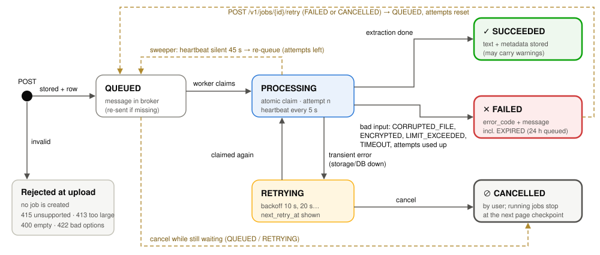
| Table | Key columns |
|---|---|
documents | sha256, original_filename, kind, mime_type, size_bytes, storage_bucket/key |
jobs | status, stage, stage_detail, progress, queue, options (JSONB), attempts/max_attempts, worker_id, heartbeat_at, next_retry_at, error_code/message, warnings (JSONB), result keys, text_preview, counts, metadata (JSONB), timestamps, cached_from_job_id, cancel_requested |
job_events | append-only timeline: level, event, human message, data (JSONB) |
Document and job are separate because one file can be processed many times with different options, and the bytes are stored only once.
| Endpoint | Purpose |
|---|---|
GET /v1/jobs/{id} | status + plain-language message, stage ("ocr: page 7/30"), progress, attempts, queue position, warnings, error, timings |
GET /v1/jobs/{id}/events | timeline (received → dispatched → started → worker_lost → …) |
GET /v1/jobs | list/filter by status, kind, filename, client_reference |
GET /v1/jobs/{id}/result | text + pages + metadata (409 with the reason if not ready) |
GET /v1/jobs/{id}/text | streamed plain text (download option) |
GET /v1/jobs/{id}/markdown | LLM-ready Markdown with page markers |
GET /v1/jobs/{id}/chunks | retrieval chunks with provenance (JSON, or JSONL download) |
POST …/cancel, …/retry | user control of the lifecycle |
Why the database and not the Celery result backend? Celery's backend only knows PENDING. Its states are lost
if Redis is flushed, and it cannot answer "how many OCR jobs failed today?". The job row is updated with a throttled progress write (at most
1 per second), a heartbeat every 5 s and ownership fencing (WHERE worker_id = me). Because of fencing, a worker the sweeper has
already declared dead can never overwrite the newer attempt's result. task_ignore_result=True keeps Redis a pure transport.
The goal is not only "text": it is faithful, structured, traceable text that an LLM can use. The pipeline is hybrid and decided per page: native parsers wherever the format carries text, layout analysis to recover structure, OCR only where there is no text, and an opt-in layout-model pipeline where tables must be rebuilt from pixels. Two benchmarks back the choices: A measures what text is recovered (OCR accuracy, text-layer fidelity) and B measures how much structure survives (headings, lists, tables).
| Kind | Text and Markdown | Safeguards and extras |
|---|---|---|
| PDF (digital) | PyMuPDF text layer (sort=True) for text. For Markdown, a layout pass over the same page: headings from font size relative to the body size of the document, bullet/numbered lists (glyphs merged with their text by baseline), ruled tables via find_tables(), unruled tables from runs of column-aligned rows, and XY-cut reading order so two-column pages are read column by column. Wrapped headings are merged. | Word-coverage guard: if the Markdown keeps under 90% of the page's words, it falls back to plain text (seen on real forms). Damaged files are repaired with a warning; encrypted files and the page limit are reported. |
| PDF (scanned or mixed) | Pages with under 25 non-blank characters (or mostly images) are rendered at 300 dpi and OCR'd. RapidOCR boxes are deskewed and ordered with XY-cut; lines clearly taller than the body text become headings. With pipeline=layout, Docling rebuilds headings and tables. | In auto mode the richer of native/OCR text wins per page; the DPI is capped by the pixel budget; OCR confidence is reported per page. |
| Images | EXIF orientation fix, upscale small images, OCR (as above). Multi-page TIFF frames become pages. | Truncation check, 80 MP decompression-bomb limit; Tesseract OSD fixes 90/180/270° rotation when boxes are vertical or confidence is low. |
| DOCX | Body walked in document order: Title/Heading styles → #, list styles and numbering → list items, tables → pipe tables (merged cells de-duplicated). Pictures are OCR'd in place (scans pasted into Word). | Zip integrity and zip-bomb guard; icons/logos under 150 px skipped; ocr_mode=off respected with a warning. |
| PPTX / XLSX | One page per slide: ## Slide N: title, bullets by paragraph level, tables, OCR of pictures, speaker notes. One page per sheet: a pipe table with cached formula values. | XLSX capped at 2 M cells; Markdown tables capped at 2 000 rows (plain text keeps everything) with a warning. |
| HTML · CSV · JSON · XML · TXT | HTML → Markdown (scripts/styles removed, tables kept); CSV/TSV → pipe table; JSON pretty-printed and XML in fenced code blocks; plain text escaped so a leading # never becomes a fake heading. | Encoding detection with confidence (Latin-1, UTF-16…); binary content disguised as text is rejected. |
| E-mail (.eml) | Headers as a table, HTML/plain body as Markdown, and every supported attachment extracted in the same job (PDF, image, Office…) as extra pages under ## Attachment: name. | Unsupported attachments (e.g. .exe) are listed with the reason; attachment failures become warnings, not job failures. |
Method (benchmark/, reproducible with one docker run). There are 53 samples with known ground truth, in English and Spanish (accents, ñ, ¿¡, emails,
amounts, dates). Twelve image conditions: clean, blur, heavy noise, 1–4° skew, 120 dpi, JPEG q15, perspective "photo",
white-on-colour, two columns, 6 pt font, invoice and 2-page scanned PDFs. There are seven kinds of born-digital PDF: single column, two columns, table,
20 pages, out-of-order content stream, glyph-by-glyph positioning and /Rotate 90. The assignment PDF itself was added as a real document, rasterised
at 150 and 300 dpi. The metrics are CER and WER (Levenshtein on normalised text), a reading-order-insensitive bag-of-words F1,
warm s/page (mean and p95), cold start, peak RSS and install size. Each engine ran in its own process with the same 4 threads on arm64 (10 CPU, 7.8 GB).
| OCR engine | Macro CER | Macro WER | BoW F1 | s/page (p95) | Cold start | Peak RSS | Install | Licence |
|---|---|---|---|---|---|---|---|---|
| Tesseract 5.3 (LSTM) | 0.214 | 0.230 | 0.826 | 0.28 (0.56) | 0.08 s | 252 MB | 15 MB | Apache-2.0 |
| Tesseract + OpenCV preprocessing | 0.080 | 0.126 | 0.912 | 0.33 (0.73) | 0.10 s | 348 MB | 88 MB | Apache-2.0 |
| RapidOCR, PP-OCRv6 small (ONNX) | 0.001 | 0.005 | 0.997 | 0.91 (1.64) | 0.34 s | 1.1 GB | 221 MB | Apache-2.0 |
| RapidOCR, PP-OCRv5 latin | 0.002 | 0.006 | 0.997 | 0.94 (1.69) | 0.34 s | 1.1 GB | 204 MB | Apache-2.0 |
| EasyOCR 1.7 (PyTorch) | 0.043 | 0.138 | 0.966 | 6.96 (13.0) | 2.73 s | 6.4 GB | 812 MB | Apache-2.0 |
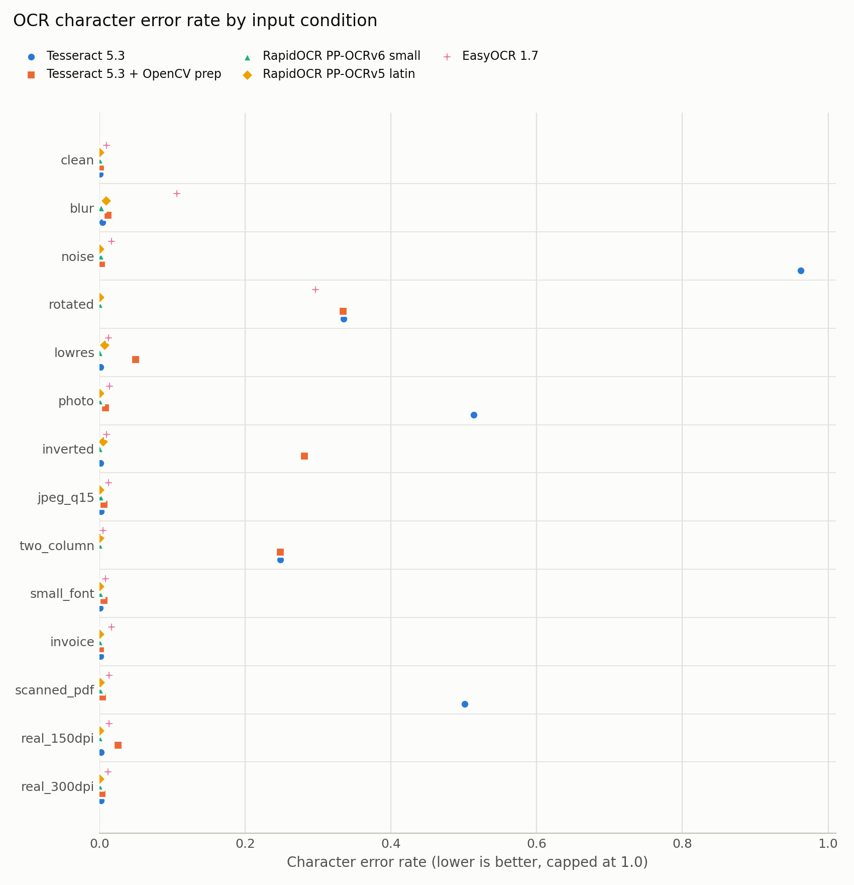
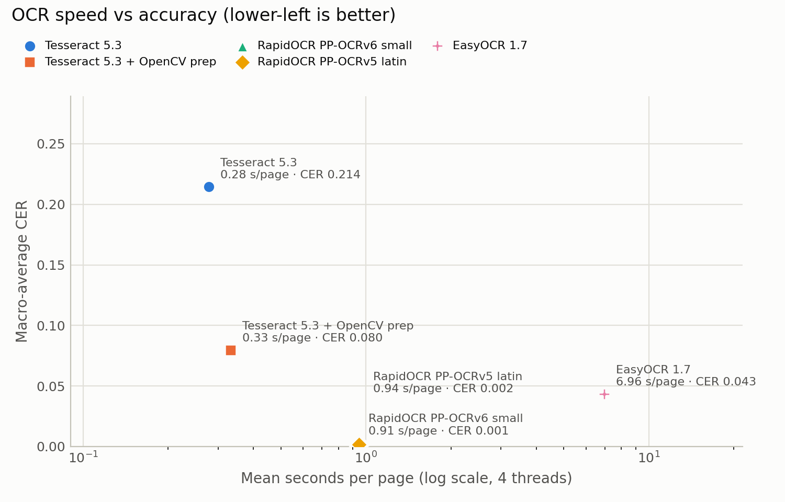
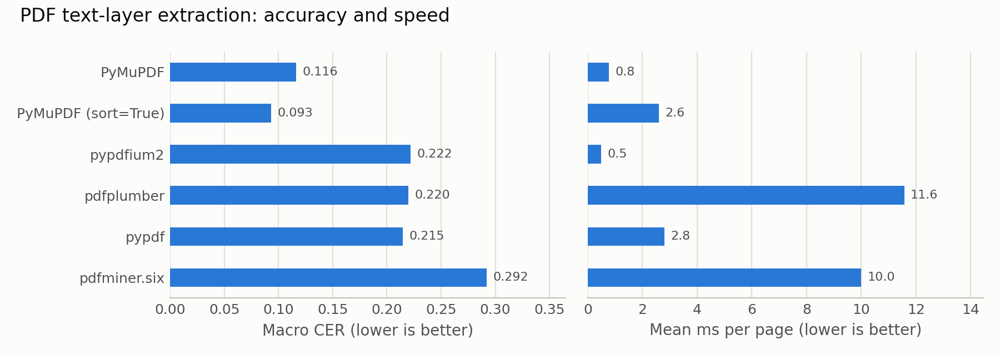
| PDF extractor | Macro CER | ms/page | rotated page | glyph-positioned | out-of-order stream | table | Licence |
|---|---|---|---|---|---|---|---|
| PyMuPDF, sort=True | 0.093 | 2.6 | 0.000 | 0.000 | 0.653 | 0.000 | AGPL-3.0 / commercial |
| PyMuPDF (stream order) | 0.116 | 0.8 | 0.000 | 0.000 | 0.813 | 0.000 | AGPL-3.0 / commercial |
| pypdfium2 | 0.222 | 0.5 | 0.741 | 0.000 | 0.813 | 0.000 | Apache-2.0 / BSD |
| pdfplumber | 0.220 | 11.6 | 0.741 | 0.145 | 0.653 | 0.000 | MIT |
| pypdf | 0.215 | 2.8 | 0.000 | 0.690 | 0.813 | 0.000 | BSD-3 |
| pdfminer.six | 0.292 | 10.0 | 1.249 | 0.000 | 0.147 | 0.648 | MIT |
All extractors were perfect on single-column, two-column and 20-page PDFs, and all returned 0 characters for scanned pages.
That validates the "few characters on this page, so OCR it" rule. No extractor recovers a content stream written out of visual order.
That limitation is shared and is also why ocr_mode=force exists.
Method (benchmark/run_structure_benchmark.py). Eleven inputs with ground-truth Markdown, in English and Spanish:
three digital PDFs (report with H1–H3, ruled, borderless and 60-row multi-page tables; a Spanish report with a real two-column page; an invoice),
two scanned PDFs, one photographed table and two DOCX. Three real public-domain IRS PDFs (Form W-9, Publication 1, Publication 15-T excerpt)
are scored by word recall against the publisher's text layer, to catch silently dropped text. The metrics are heading F1 (text match, level ±1),
list-item recall, table cell F1, CER after stripping Markdown, and s/page. Candidates include the libraries themselves and this service
end to end through its API, with both pipelines.
| Candidate | Heading F1 | List recall | Table F1 | CER | s/page | Real docs BoW F1 (min) | Peak RSS | Licence |
|---|---|---|---|---|---|---|---|---|
PyMuPDF get_text (baseline) | 0.00 | 0.42 | 0.00 | 0.700 | 0.002 | 1.00 (1.00) | 55 MB | AGPL / commercial |
| pymupdf4llm 0.0.24 (+ coverage guard) | 0.41 | 0.44 | 0.32 | 0.668 | 0.025 | 0.98 (0.95) | 82 MB | AGPL / commercial |
| pymupdf4llm 1.28 (+ layout model) | 0.82 | 1.00 | 0.34 | 0.453 | 0.446 | 0.98 (0.96) | 869 MB | AGPL / commercial |
| MarkItDown 0.1.7 | 0.33 | 0.61 | 0.46 | 0.525 | 0.038 | 0.98 (0.97) | 218 MB | MIT |
| Docling 2.128 + RapidOCR | 1.00 | 1.00 | 1.00 | 0.009 | 4.41 | 0.98 (0.95) | 3.3 GB | MIT (models Apache/CDLA) |
| DocIntel service, standard pipeline | 0.87 | 0.90 | 0.50 | 0.238 | 0.80 | 0.98 (0.96) | – | this project |
| DocIntel service, layout pipeline | 1.00 | 1.00 | 1.00 | 0.009 | 7.74 | 0.98 (0.95) | – | this project |
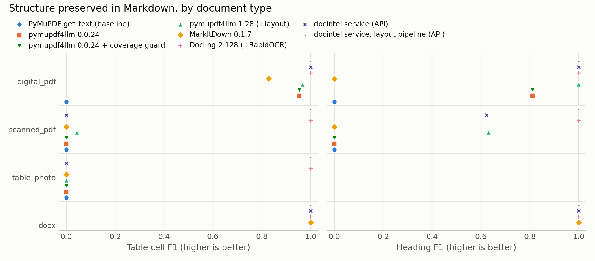
| Heading F1 / table F1 | digital PDF | scanned PDF | photo | DOCX |
|---|---|---|---|---|
| pymupdf4llm 0.0.24 | 0.81 / 0.95 | 0 / 0 | – / 0 | n/a |
| MarkItDown | 0.00 / 0.83 | 0 / 0 | – / 0 | 1.00 / 1.00 |
| DocIntel standard | 1.00 / 1.00 | 0.62 / 0.00 | – / 0.00 | 1.00 / 1.00 |
| DocIntel layout | 1.00 / 1.00 | 1.00 / 1.00 | – / 1.00 | 1.00 / 1.00 |
The benchmark changed the code. Its first run of the service found three defects in the standard pipeline: bullet glyphs on their own line (digital list recall 0.00), the two-column page read across columns (CER 0.285) and borderless tables emitted as loose lines. The fixes (baseline merging, XY-cut ordering, unruled-table detection, wrapped-heading merge, OCR heading detection) raised digital-PDF list recall to 1.00, table F1 from 0.96 to 1.00, two-column CER to 0.000 and scanned heading F1 from 0.00 to 0.62. Real documents kept a word recall of 0.96 or better throughout.
sort=True) + own layout passPyMuPDF was the only text-layer extractor without errors on rotated, glyph-positioned and table PDFs (benchmark A). For Markdown, the service's layout pass matched Docling on digital PDFs (1.00 / 1.00) at a fraction of the cost, beat pymupdf4llm 0.0.24 (0.81 / 0.95), and avoided pymupdf4llm 1.28, which is 18× slower, adds 800 MB of RAM and read the two-column page across columns. Caveat: AGPL; pypdfium2 is the permissive fallback.
RapidOCR (PP-OCRv6): CER 0.001 against 0.214 for raw Tesseract, at ≈1 s/page, fully offline. Its line classifier is disabled (it flipped upright lines); rotation uses Tesseract OSD. Tesseract is ≈3× faster with ¼ of the memory and as accurate on clean scans. EasyOCR was rejected: 7× slower, less accurate, 6.4 GB. In the service, a 30-page scan took 51.8 s with RapidOCR and 27.1 s with Tesseract.
pipeline=layout (Docling)No OCR-lines heuristic rebuilt tables from pixels (F1 0.00); only a table-structure
model did (1.00). Docling costs 2.2 GB of install, ~3 GB RAM and 4–8 s/page, so it is a separate worker, queue and image (compose profile
layout). The default path stays fast, and clients who need tables from scans (invoices, statements) opt in per document.
DOCX structure from styles scored 1.00 on headings, lists and tables, the same as Docling and MarkItDown, with no models. HTML goes through markdownify, e-mail through the standard library. Office files with pictures are routed to the OCR pool so pasted scans are read.
| Decision | Choice and rationale |
|---|---|
| Canonical format | Markdown: models read it natively, it is compact (pipe tables cost far fewer tokens than HTML), humans can review it, and it keeps
headings, lists and tables. Multi-page documents carry <!-- page: N --> markers, which are invisible when rendered but give page provenance. |
| Chunk boundaries | Structure first: a heading closes the current chunk once it holds ≥ ¼ of the budget (no micro-chunks). Paragraphs and lists are packed up to the budget; an oversized paragraph is split by sentences, then by tokens. |
| Tables | Never split mid-row. A table larger than the budget is split by rows, and the header row is repeated in every part, so each chunk is a self-describing table. |
| Overlap | Default 64 tokens, only between prose chunks of the same top-level section, cut at a word boundary. Tables and section changes get none, because overlap there would duplicate headers or mix topics. |
| Size & tokenizer | Default 512 tokens with tiktoken cl100k_base (baked into the image; falls back to chars/4 offline), per-request 64–4096.
Token counts per chunk and per document let clients budget prompts and embedding costs. |
| Provenance | Each chunk: id, index, page_start/page_end, heading_path, char_start/char_end into document.md,
kinds (paragraph, list, table, code), token_count, overlap_tokens. This is enough to cite, highlight and re-rank. |
| Artifact | Location | Why there |
|---|---|---|
| Plain text (pages separated by form feed) | MinIO results/jobs/{id}/text.txt | Search indexing, diffing, legacy consumers; streamed. |
| Markdown | MinIO …/document.md | What LLMs and reviewers read; can be megabytes, so it belongs in object storage. |
| Retrieval chunks | MinIO …/chunks.jsonl | One JSON object per line, ready for bulk loading into a vector database. |
Structured result: per-page text and Markdown, method (text_layer, ocr:rapidocr, layout:docling), confidence, timings, metadata, warnings, chunks | MinIO …/result.json | One self-contained, versionable document per job. |
| Queryable summary: preview, char/word/page/token/chunk counts, language, metadata JSONB, warnings, result keys | PostgreSQL jobs | Powers listings, filters and the dashboard without touching object storage. |
Keeping bytes in object storage and summaries in the database keeps PostgreSQL small and fast. The raw document stays content-addressed, so any job can be
reprocessed with new options without re-uploading. A vector index is deliberately outside the service: chunks.jsonl is the hand-off to whichever
embedding model and vector store the client uses.
| Group | Fields | Use |
|---|---|---|
| Always | SHA-256, detected MIME and kind, size, pages, chars/words/lines, tokens, chunks, tables, outline (heading tree), extraction method per page, mean OCR confidence, timings | dedup, cost and context budgeting, quality triage, navigation |
| Language | ISO code + confidence (fastText lid.176, on-device) | route to language-specific models, pick the OCR language |
| Entities (regex) | emails, URLs, dates (ISO, numeric, Spanish and English month names), amounts (MXN/USD/EUR/$), phone numbers | invoice and form triage without an LLM; metadata filters in RAG |
| title, author, subject, keywords, creator/producer, dates, encryption, repaired flag, page size, outline, text-layer vs OCR pages, tables detected, body font size | provenance, scanned-vs-digital routing | |
| Image | format, dimensions, DPI, frames, EXIF (camera, date, software, orientation) | quality warnings, provenance |
| Office / HTML / e-mail | core properties, paragraph/heading/table/image counts, embedded images OCR'd, slide and sheet names; HTML title/lang/description; e-mail from/to/cc/date/subject and per-attachment status | search facets, display, audit |
| Setting | Value | Effect / reason |
|---|---|---|
| Queues | heavy, light, layout, maintenance | Routing is decided at upload from the detected kind and options (§3). A burst of 500-page scans cannot delay a 1 KB text file, and each pool can be scaled on its own (--scale worker-heavy=3). |
task_acks_late | True | The message is acknowledged only after the task finishes, so a crash leaves it unacked and it gets redelivered. |
task_reject_on_worker_lost | True | If a pool child is OOM-killed, the message is requeued instead of being marked failed. |
worker_prefetch_multiplier | 1 | A busy worker doesn't reserve messages it can't start, so another replica can take them. |
visibility_timeout | hard limit + 300 s | Redis redelivers unacked messages only after the longest legitimate task has had time to finish. |
| Concurrency | heavy 2 processes × OCR_THREADS=2 (4 GB limit), light 4 | Threads per process are pinned (OMP_THREAD_LIMIT, ONNX intra-op), so processes × threads ≈ cores reserved for OCR with no oversubscription. RapidOCR peaks at ~1.1 GB per process. |
worker_max_tasks_per_child | 200 | Recycles processes to contain leaks in native libraries (MuPDF, Leptonica). |
| Time limits | soft 900 s / hard 960 s | A runaway job becomes a clear TIMEOUT failure instead of a stuck slot. |
| Task id | <job_id>.<dispatch_n> | Lets the sweeper map broker messages back to jobs, and keeps each re-dispatch distinguishable in Flower. |
| Redis persistence | AOF, everysec | Queued messages survive a broker restart, losing at most 1 s of messages. The sweeper covers even that. |
UPDATE jobs SET status='PROCESSING', attempts=attempts+1 … WHERE id=? AND status IN ('QUEUED','RETRYING') AND attempts < max_attempts RETURNING id.
Duplicate deliveries, redelivered messages and re-dispatches find the row not claimable and are acknowledged in about 3 ms without doing any work.| Failure | Mechanism | What the user sees |
|---|---|---|
| Unsupported, empty or oversized upload | Magic-byte sniffing, size guard before buffering | 415 / 400 / 413 with error.code, message and accepted extensions. No job is created. |
| Corrupted / truncated / encrypted / bomb file | Typed extractor errors (retryable=False), so there is no pointless retry. MuPDF repairs damaged PDFs when it can. | FAILED + CORRUPTED_FILE, ENCRYPTED_DOCUMENT or LIMIT_EXCEEDED, or SUCCEEDED with a "PDF was repaired" warning. |
| Worker process or container killed mid-job | Heartbeat stops. The sweeper finds PROCESSING with a heartbeat older than 45 s, re-queues and re-dispatches. The message is also unacked (acks_late). | Timeline shows worker_lost and attempt 2/3. A heartbeat-age warning appears while waiting. |
| Poison document (crashes every time) | Attempts are counted in the claim; after 3 the sweeper fails the job. | FAILED WORKER_LOST: "stopped responding on 3 of 3 attempts… makes the worker crash or run out of memory". |
| Whole stack killed | Durable volumes. On start, every worker runs a sweep (advisory-locked) and beat continues every 20 s. | Jobs resume by themselves: running ones on attempt 2, queued ones from the AOF-restored queue. |
| Broker loses messages / publish fails | The sweeper compares QUEUED jobs against the Redis lists and unacked hash and re-dispatches missing ones. Duplicates are harmless. | Upload still returns 202 with a "queue temporarily unavailable" warning. Events show dispatch_failed / message_missing. |
| Object storage / DB outage | API maps errors to 503 + Retry-After. Workers classify them as transient: RETRYING with exponential backoff (10 s, 20 s…). | STORAGE_UNAVAILABLE / DATABASE_UNAVAILABLE. The job shows next_retry_at and the attempt counter. |
| Slow or stuck processing | Soft/hard time limits; cancellation checked per page. The soft limit is also recognised when a native library wraps it (ONNX Runtime raised it as ONNXRuntimeError, which the chaos test caught being retried 3×), by cause chain and elapsed time. | FAILED TIMEOUT on attempt 1 with advice (split, ocr_engine=tesseract, ocr_mode=off), or CANCELLED. |
| Cancel requested, then the worker dies | The sweeper honours cancel_requested on stale jobs instead of re-queueing them. Found in the audit: such a job would otherwise sit QUEUED unclaimable until the 24 h expiry. | CANCELLED within ~1 min, with the reason in the timeline. |
| Stored file deleted (retention, manual) | NoSuchKey is a non-retryable ObjectMissingError, not a transient storage error. | FAILED DOCUMENT_MISSING on attempt 1; result downloads return 410. |
| No workers at all | Queue TTL expiry; readiness endpoint | /v1/system: "No workers online: jobs will wait…". After 24 h: FAILED EXPIRED. |
| Low-quality result | Per-page confidence, text-layer detection, encoding confidence | Warnings: low OCR confidence on pages 3–5, mixed document, no text found, extension mismatch, rotation corrected… |
scripts/chaos_test.py injects each failure into the running compose stack and asserts the outcome through the public API only.
scripts/load_test.py uploads a mixed burst of documents with 16 parallel clients, so documents arrive faster than they can be processed. It then checks that every job
terminates, and that cheap documents are not starved by the OCR backlog.
Monitoring works on three levels. Each one answers a different question.
| Tool | Question it answers | Contents |
|---|---|---|
Dashboard /dashboard | "Is the pipeline healthy and keeping up?" (product and operations view) | dependency health pills; tiles for received, success rate, in-flight, p50/p95 processing time, queue wait, pages, LLM tokens and chunks, jobs with warnings; throughput chart (succeeded vs failed per interval); queue depths and per-worker busy slots; jobs and average time by document type; failures by error code; reliability events (worker losses recovered, lost messages re-dispatched, automatic retries, uploads while the broker was down); active jobs with heartbeat age; recent failures. Window 15 min–7 days, auto-refresh 3 s. |
Flower :5555 | "What is Celery doing right now?" (task level) | per-task state, runtime and args (the job id), worker pools, broker queues, rate limits and remote control |
GET /v1/system | "Can I use the service?" (for machines and the UI banner) | DB, object storage, broker and worker status with human messages; HTTP 503 when degraded |
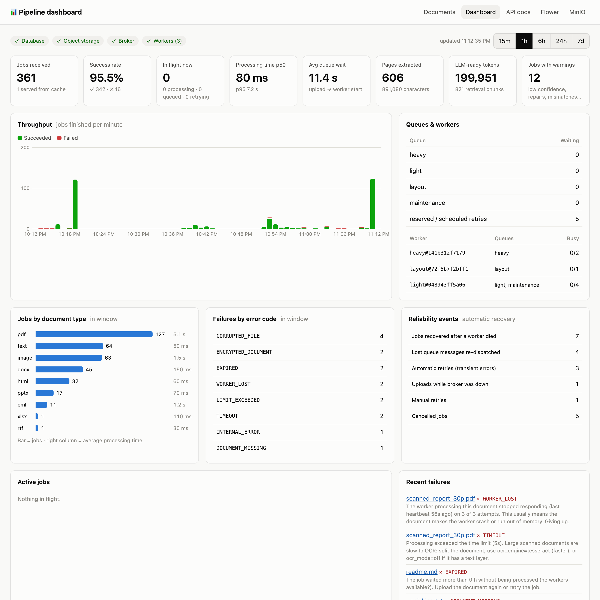
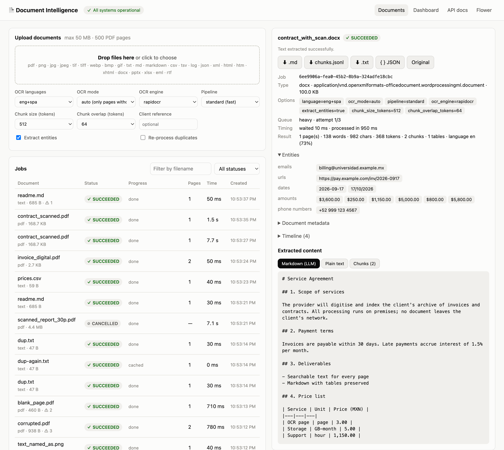
.md, chunks.jsonl, .txt and JSON.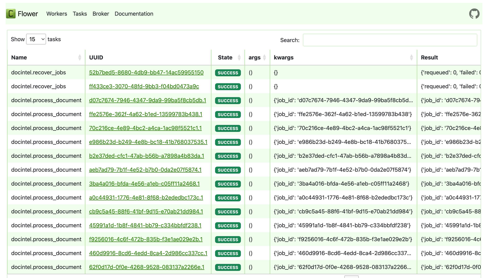
<job_id>.<dispatch_n>, so re-dispatches after a recovery are visible as .2, .3.Every requirement of the assignment is backed by an automated check that runs against real containers. The same suites run in GitHub Actions on x86_64 from a clean checkout. That proves the single-command setup on a machine other than the development laptop (arm64).
| Suite | What it exercises | Checks | Result |
|---|---|---|---|
Unit (pytest, app image) | format detection and spoofing, every extractor (text and Markdown), OCR engines, rotation, e-mail attachments, embedded-image OCR, chunker invariants, typed errors | 47 | ✓ all pass |
| Unit (layout image) | Docling pipeline: scanned table rebuilt, digital PDF, image, non-applicable formats | 3 (+15 shared) | ✓ all pass |
Integration (tests/integration) | through HTTP: 17 formats end to end (text, Markdown, chunks, JSONL, result, events); 415/400/413/422 errors; failed-file messages; warnings; dedup cache; cancel and retry; webhook delivery; filters; downloads; system/formats/stats/UI; layout pipeline | 40 | ✓ all pass |
Chaos (scripts/chaos_test.py) | 13 failure injections (table in §7) | 13 | |
Load (scripts/load_test.py) | mixed burst; all terminal; upload latency; queue isolation | 1 | |
| Benchmarks A and B | parser/OCR accuracy and structure, with the service measured end to end | – | reproducible with docker run |
| CI (GitHub Actions, x86_64) | build → unit → docker compose up --wait → integration → 9 chaos scenarios → load test | – |
| Requirement (assignment) | Implementation | Evidence |
|---|---|---|
| Push documents; accept PDF, PNG/JPG, TXT; reject unsupported | POST /v1/documents, content sniffing (§3) | integration test_format_end_to_end ×17, test_rejected_uploads; chaos rejected_inputs |
| Claim-check pattern | MinIO payload + {job_id} message after commit (Fig. 3) | integration end-to-end tests; broker_data_loss (messages rebuilt from DB claims) |
| Additional formats and payload parameters | HTML, DOCX, PPTX, XLSX, RTF, CSV/JSON/XML, EML; 10 parameters (§1) | test_format_end_to_end, test_invalid_options, test_duplicate_upload_is_served_from_cache, test_webhook_is_delivered |
| Reasonable upload limits | 50 MB (pre-buffer), pages, pixels, zip size, time (§3) | test_upload_limit_is_enforced_before_buffering; huge_400mp.png; processing_timeout |
| Job tracking endpoints; DB lifecycle | jobs, events, result, text, markdown, chunks, cancel, retry; PostgreSQL model (§4) | test_result_not_ready_then_cancel_then_retry, test_listing_filters_and_not_found |
| Best parsing methods, supported by a benchmark | hybrid per-page pipeline; RapidOCR; PyMuPDF + layout pass; opt-in Docling (§5) | Benchmarks A and B (tables in §5.2–5.3), including the service itself |
| How/where to store text; extra metadata | MinIO artifacts + PostgreSQL summary; metadata catalogue (§5.6–5.7) | integration checks of /text, /markdown, /chunks, /result |
| On-device, open source | all models baked into images; no external API calls | CI runs with no credentials; licences in §5 |
| Redis + Celery | queues, acks_late, prefetch 1, beat (§6) | every chaos scenario |
| Unsupported / corrupted files | typed errors, no pointless retries | test_bad_files_fail_with_explicit_error; rejected_inputs |
| Workers or whole stack killed mid-processing; no job lost | heartbeats, sweeper, idempotent claim, AOF, volumes | worker_kill, stack_kill, broker_data_loss, broker_down_on_upload |
| No document non-terminal forever | max attempts, time limits, TTL expiry, cancel-on-stale | poison_pill, processing_timeout, queue_expiry, cancel_while_worker_dead, document_missing |
| Warnings, errors, status information | error codes, warnings, timeline, /v1/system, UI banners | test_warnings_are_reported; database_down, storage_down_during_processing |
| Flower, dashboard, simple UI (optional) | §8 | test_system_formats_stats_and_ui; screenshots |
| Single docker compose command; report | docker compose up --build; this PDF | CI job on a clean x86_64 runner |
| Decision | Cost we accept | Mitigation / next step |
|---|---|---|
| Redis as broker (not RabbitMQ/SQS) | Weaker delivery guarantees: unacked messages come back only after the visibility timeout, and FLUSHALL loses everything. | Postgres is the source of truth and the sweeper re-dispatches from it (tested). Swap to RabbitMQ quorum queues if the message volume grows. |
| Heartbeat-based loss detection | Recovery latency is 45–65 s. A 60 s network partition could cause a redundant re-run. | Ownership fencing makes a late worker's writes no-ops. Both timeouts are env-tunable. |
| Job-level (not page-level) retries | A crash at page 29/30 re-OCRs the whole document. | Split large PDFs into page-range subtasks (Celery chord) with per-page checkpoints in object storage. |
| Polling API | Clients must poll. | Webhook (callback_url) exists. Server-Sent Events on /v1/jobs/{id}/stream would be the next step. |
| PyMuPDF (AGPL) | Licence obligations if the service is distributed closed-source. | pypdfium2 fallback (benchmarked) or a commercial MuPDF licence. |
| RapidOCR default | 1.1 GB peak per process, ≈3× slower than Tesseract, and it sometimes merges words on photos. | ocr_engine=tesseract for clean bulk scans; worker memory limit and concurrency sized for it. |
| Standard pipeline on scans | Tables in scans/photos are not rebuilt (table F1 0.00); scanned headings are only partly recovered (F1 0.62). | Opt-in pipeline=layout (F1 1.00). Next step: automatically escalate pages whose OCR geometry looks tabular. |
| Docling as a separate profile | +2.2 GB image, ~3 GB RAM per process, 4–8 s/page on CPU; not started by default. | Run it on GPU nodes or scale it independently; the API warns when no layout worker is online. |
| Regex entities; no embeddings | No key-value extraction, handwriting or semantic enrichment; vectors are left to the client. | chunks.jsonl is the hand-off. A local embedding worker (e.g. bge-m3) could be added behind another queue. |
Out of scope for a class project, and required before production: authentication with API keys or OAuth, per-tenant quotas and rate limiting,
an allow-list for callback_url (SSRF risk), antivirus scanning (ClamAV) before processing, encryption at rest and retention policies
(S3 lifecycle rules plus deleting DB rows), Alembic migrations instead of create_all, Prometheus metrics with alerting on queue age, and autoscaling
workers on queue depth (e.g. KEDA).
docker compose up --build # api :8000 (UI, /dashboard, /docs) · flower :5555 · minio :9001 docker compose --profile layout up -d --build # optional high-fidelity pipeline (Docling worker) docker compose --profile test run --rm tests # 40 integration tests against the running stack python3 scripts/load_test.py # burst load test → docs/load_test_results.md docker compose run --rm --no-deps api pytest -q # 47 unit tests python3 scripts/chaos_test.py # failure injection → docs/chaos_results.md docker build -t docintel-bench benchmark/ && docker run --rm -v "$PWD/benchmark":/bench docintel-bench # benchmark A docker build -f benchmark/Dockerfile.structure -t docintel-bench-structure benchmark/ # benchmark B docker run --rm --add-host host.docker.internal:host-gateway -v "$PWD/benchmark":/bench docintel-bench-structure python run_structure_benchmark.py
| Path | Content |
|---|---|
app/api | FastAPI app, schemas, dashboard aggregations |
app/worker | Celery config, processing task, heartbeat, progress, retries, webhooks |
app/jobs.py | dispatch-after-commit, atomic claim, recovery sweeper |
app/extraction | format detection; PDF (+ layout → Markdown), image, text, Office, e-mail extractors; OCR engines; Docling pipeline; chunking; enrichment |
benchmark/ | dataset generator, runner, raw and summarised results, charts |
samples/ | demo documents (incl. structured PDF/DOCX, scanned tables, e-mail) and 11 edge cases |
tests/, scripts/ | unit and integration tests; chaos, load and sample-generation scripts |
.github/workflows/ci.yml | CI on x86_64: build, unit, compose, integration, chaos, load |
docs/ | implementation plan, verification record, chaos and load results |